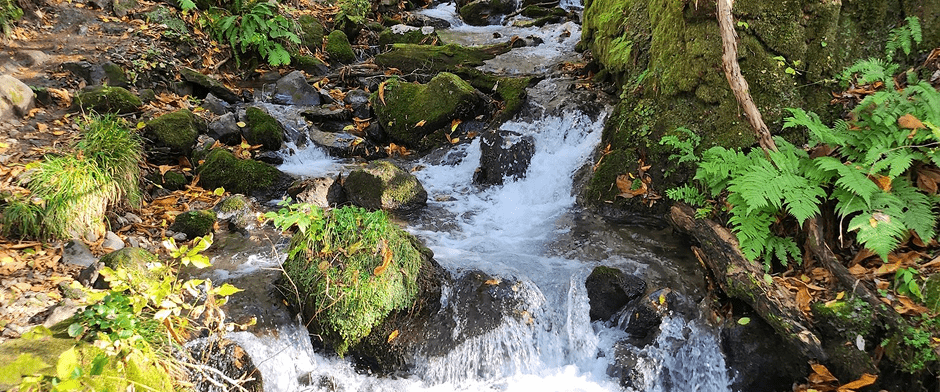
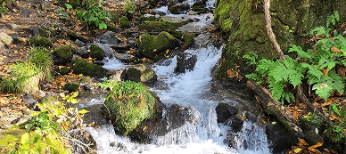
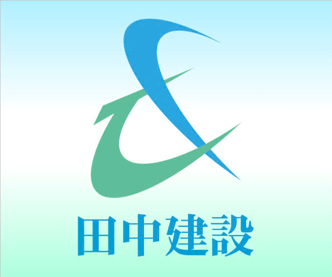
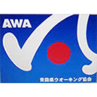

奥入瀬渓流エコツーリズムプロジェクトとは？
奥入瀬渓流の自然環境保全のために美
しい清流とブナ林をゆっくり味わっていただくために


後世に残すべき貴重な自然環境や美しい風景を有する奥入瀬渓流。『奥入瀬渓流』の自然環境保全に資する活動を官
民一体となって推進するプロジェクトです。
「奥入瀬渓流の美しい自然を、この地に訪れる皆様と共に守っていきたい」そんな思いで日々活動を続けています。


奥入瀬渓流エコツーリズムの協賛企業


私たちは奥入瀬エコツーリズムプロジェクトに協賛しています